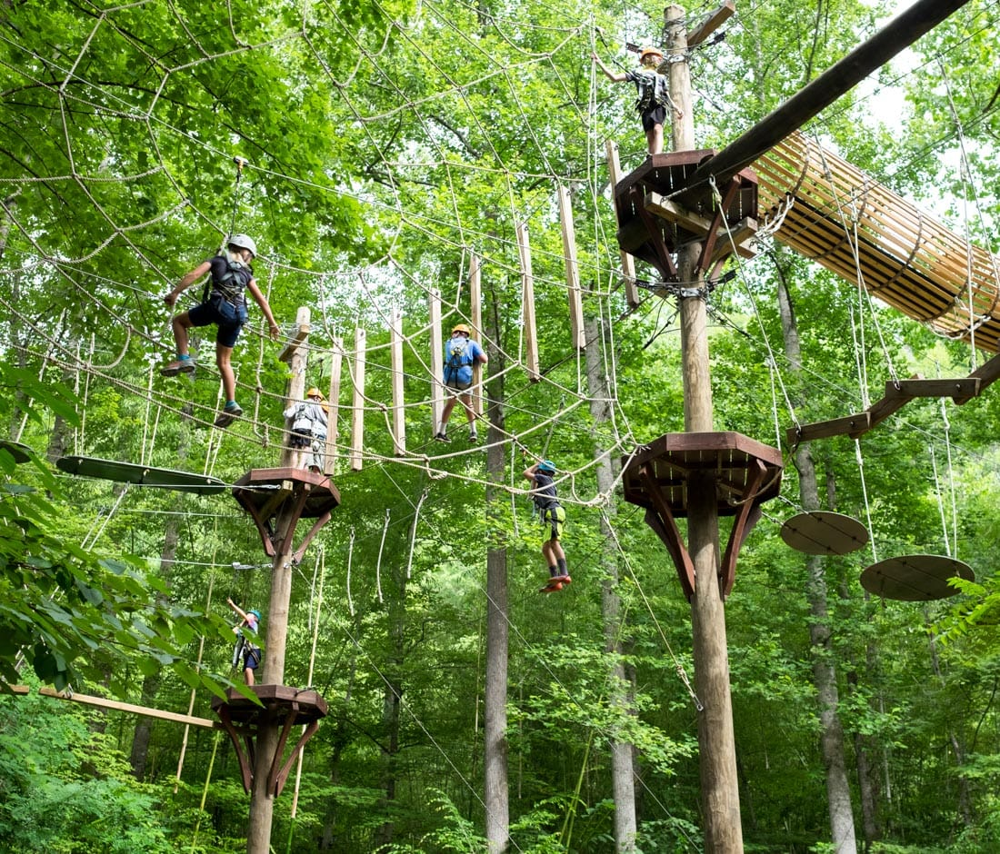
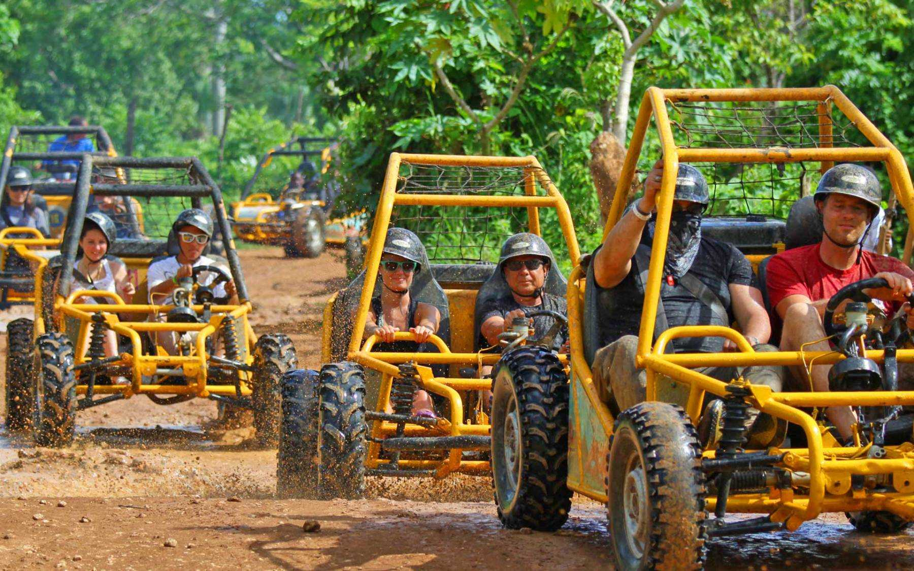

Adventure Park
Obtenga su adrenalina en un safari en la jungla durante su estadía en Punta Cana. Visita el parque de aventuras Hacienda Tuko para volar por los aires en una serie de tirolinas. Luego, disfrute de un relajante paseo a caballo antes de salir a dar un emocionante paseo en buggy por las dunas a través de la jungla. Los invitados pueden seleccionar si solo quieren participar en la porción de tirolesa del recorrido.

Paquete de Aventura

Punta Cana tiene tantos aspectos destacados para incluir en una visita, pero puede ser difícil incluirlo todo. Reserve con anticipación esta experiencia de tirolesa y buggy en Punta Cana con entrada a Monkeyland y combine tres actividades en un solo día. Junto con un emocionante curso de tirolesa, también conducirá un buggy hasta el río Anamuya, donde podrá nadar. Luego, termine el día con una visita guiada a Monkeyland.